From a Figma template to a real, working mobile app with accounts, saved data and a public link. Designed, directed and shipped with human-directed AI, step by step.
A motion-graphics ad built in code: the logo is drawn, becomes the app icon, and hands over to a phone that walks through the product. Every shot transforms into the next.
9:16Vertical, made for Reels, Shorts and TikTok
15 sEight shots, no cross-dissolves
6AI tutorial videos inside the app
7Day colours, one for each day of the week
01 · Starting point
A Figma kit, a brief, one portrait
The project began with a purchased fitness-app template in Figma: dozens of screens, flat and static. The brief was simple. Name it PL Fitness, make it a real app, and give me a link I can open on my phone.
I read the design file directly, pulled out colours, type, spacing and the exercise cut-outs, then rebuilt each screen as working code instead of pictures.
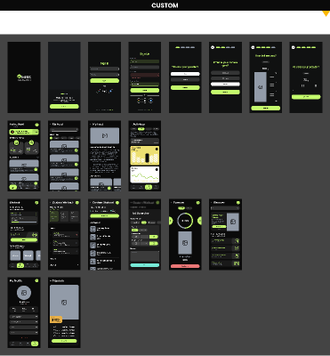
02 · The build
Every screen, working
Splash, onboarding, sign-in, a setup questionnaire, home, workout discovery, a weekly plan, exercise lists, a video player, activity charts, a profile and premium plans. One small web app, no framework, installable to a phone's home screen.
HTML · CSS · JavaScriptSupabase accounts & databaseNetlify hostingClaude
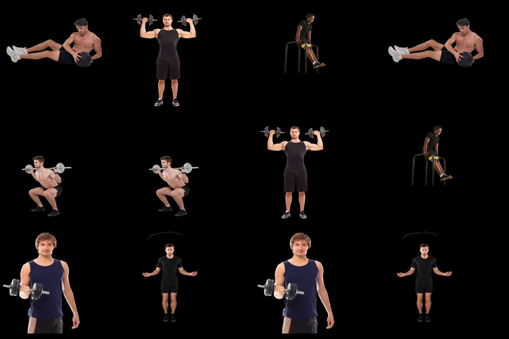
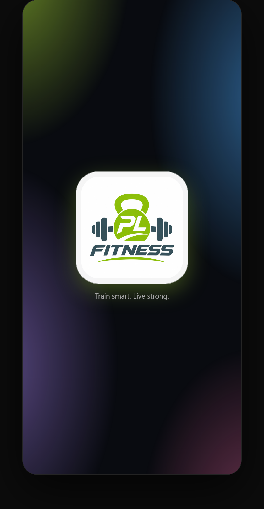
Splash
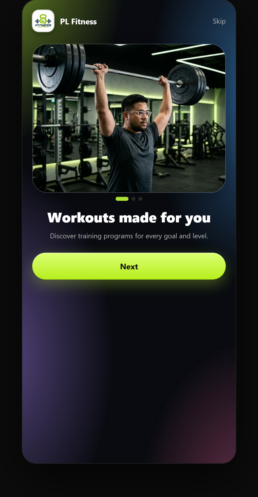
Onboarding
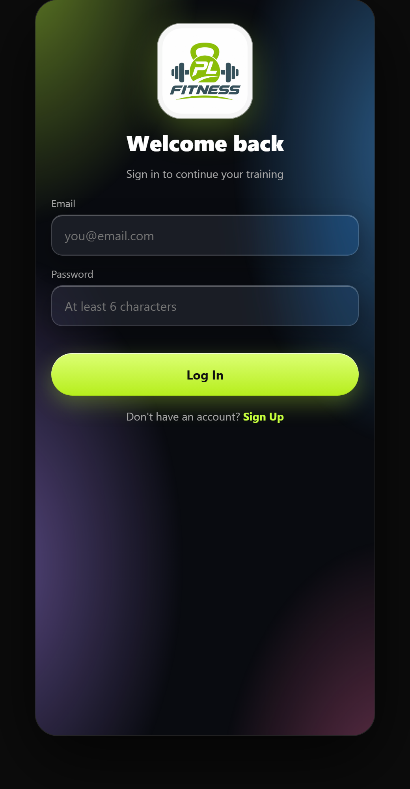
Sign in
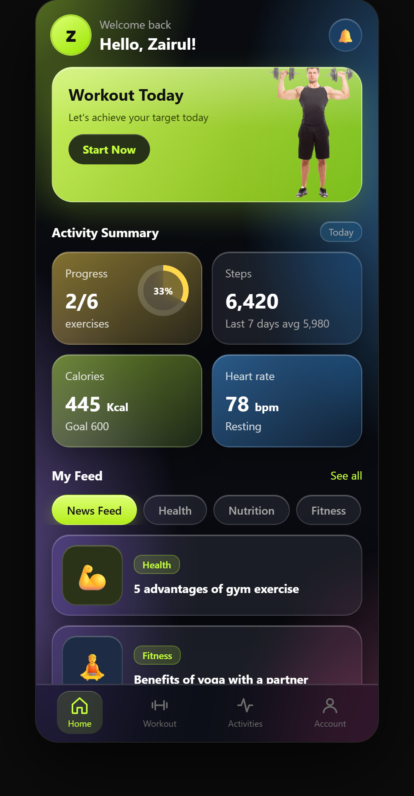
Home
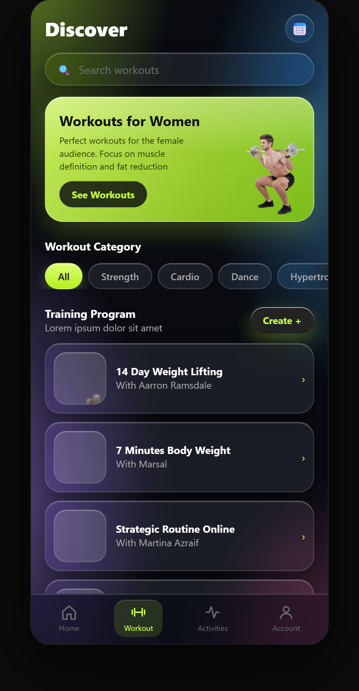
Discover
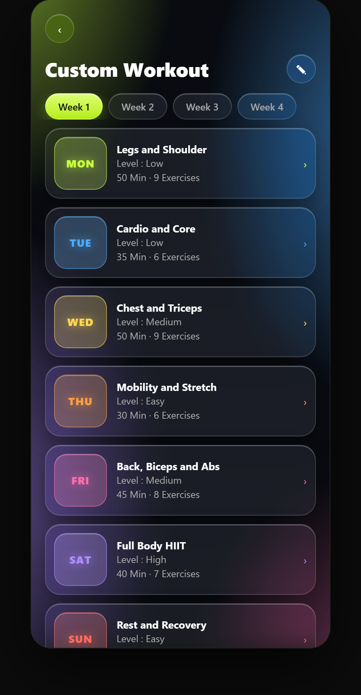
Weekly plan
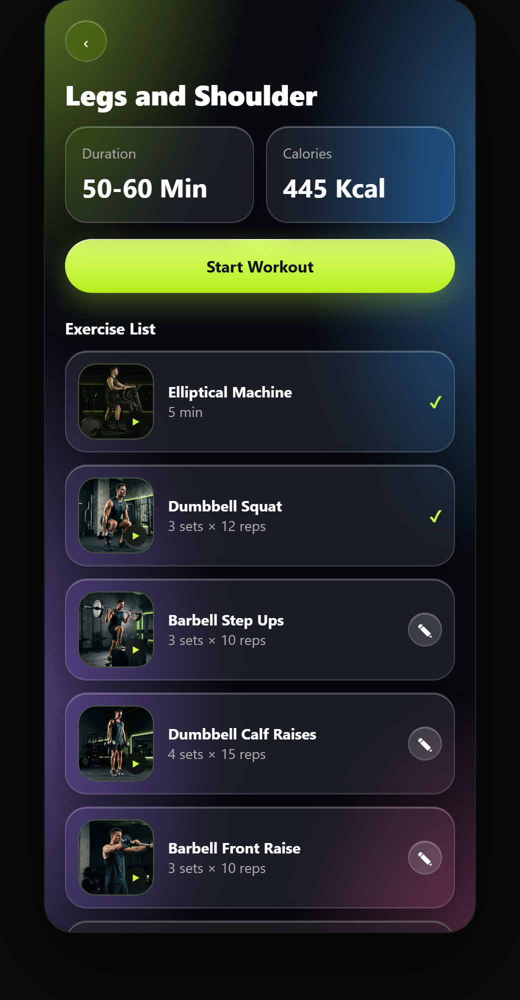
Exercise list
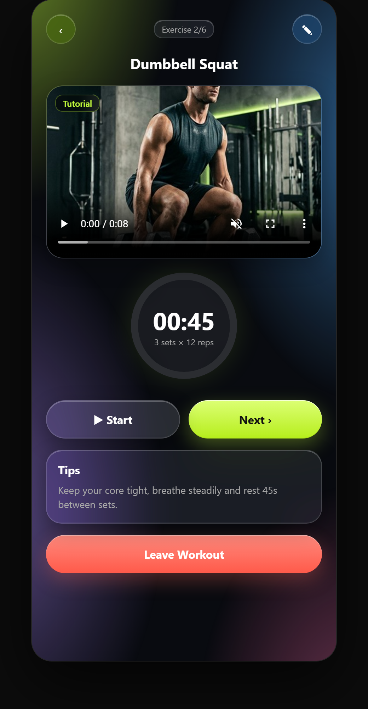
Player
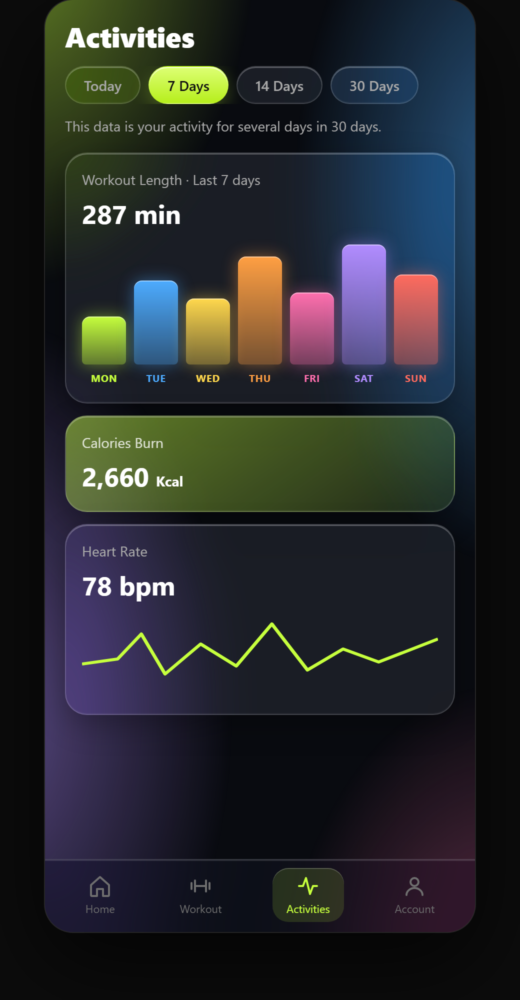
Activities
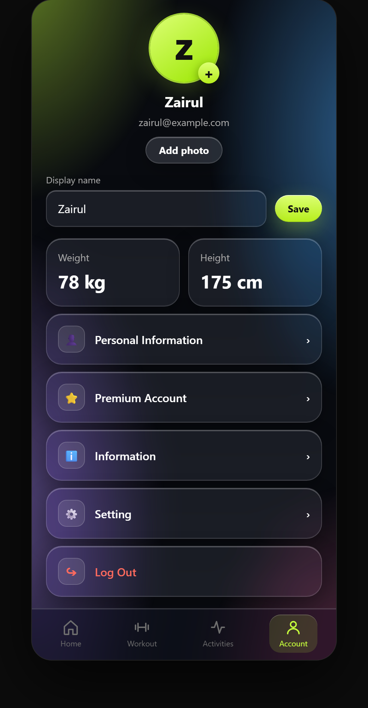
Profile
03 · Accounts & hosting
A real app, not a mock-up
Sign-up and sign-in use real email accounts. Each person's progress, plan and profile is stored in a database behind row-level security, so a user can only ever read and write their own data. The app is published at a public link and works on any phone.
The first build was flat and dark. I rebuilt the surfaces as Apple-style glass: translucent, blurred, with soft light from a drifting colour field behind. Each weekday got its own colour so the plan reads at a glance.
MONTUEWEDTHUFRISATSUN
The kettlebell mark that replaced the first placeholder logo.
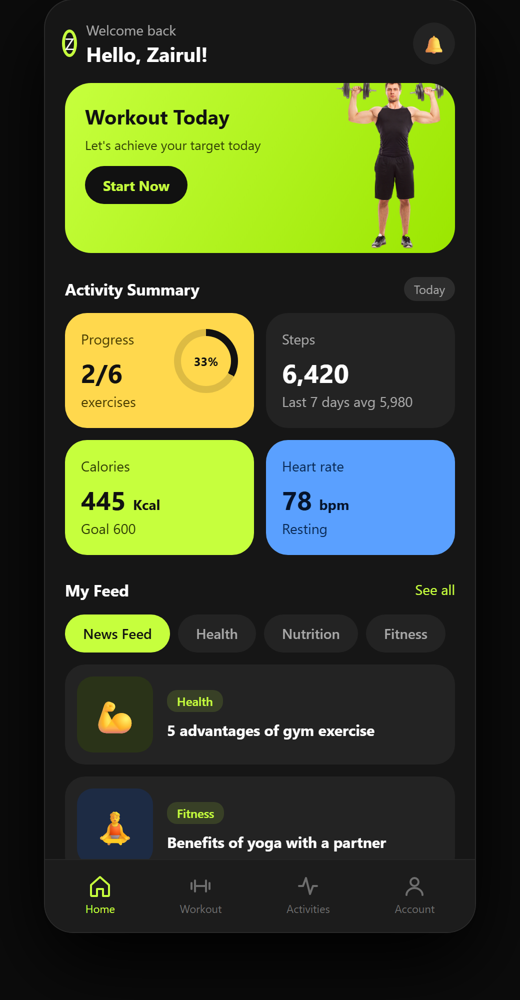
Before: flat cardsAfter: glass, colour and a personal greeting
05 · AI-made media
Thumbnails, tutorials and intro photos
The exercise list started with plain icons. Using Google Flow, I generated a thumbnail for every exercise and a short tutorial video for each one. The three intro screens use realistic images of me training, directed from a reference portrait. Human first, tool second: I wrote the shots, chose the takes and kept only what looked right.
The thumbnail sheet from FlowA squat still before it became a video
Tutorial clips inside the app
06 · Motion
Then I made it move
The ad above is written as code with Remotion, so each shot, caption and timing is editable. Sound effects are generated in sync with the picture: a hit as the logo lands, a rising tick for each day, a swoosh at every transition.
07 · Second build
MECA 3D: an interactive concept for an employers' consultancy
I studied meca.com.my page by page, wrote down what already works and what slows a buyer down, then rebuilt the experience as a scroll-driven 3D story. It keeps MECA's real content and adds fast routes to a consultation and to courses, animated proof numbers, and a 3D scene that changes with each section.
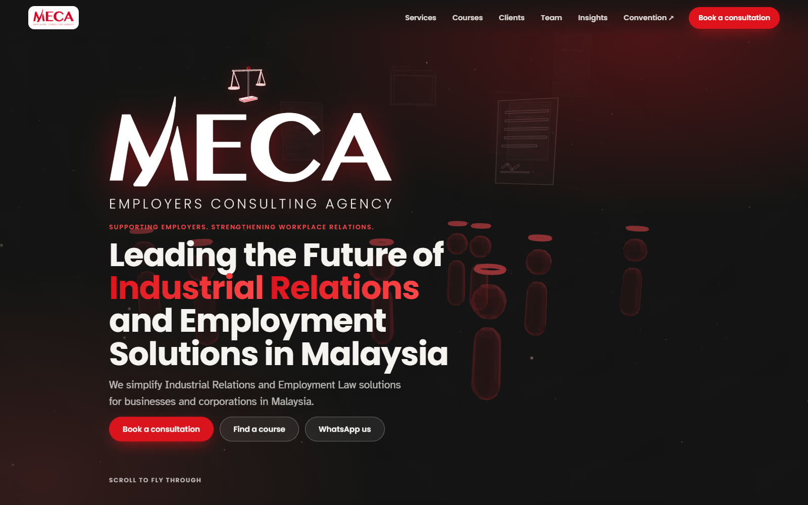
Hero: big white logo, a small scales of justice turning slowly above it, management figures drifting behind.
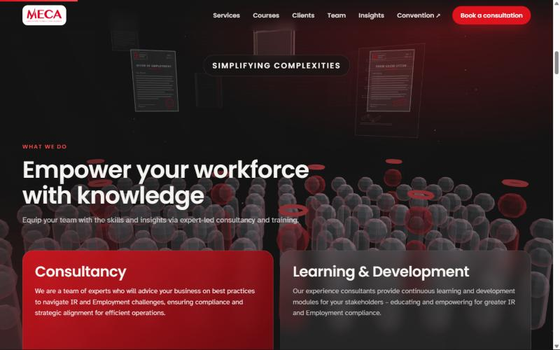
Consultancy: legal document mockups above a line-up of faceless glass figures.
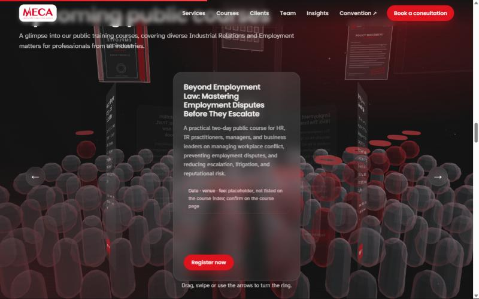
Courses: a 3D carousel you can drag, with a clear Register button on every course.
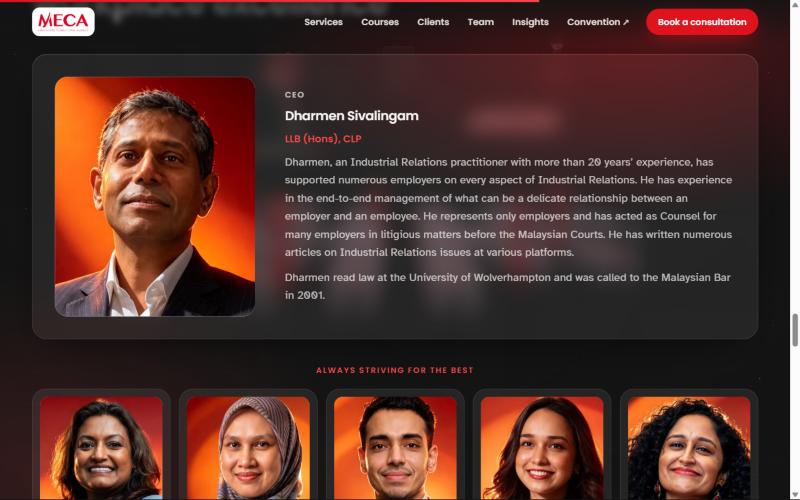
Team: portraits matched for head size and eye line.
What I found: courses sit two clicks deep, two different phone numbers appear on the home page, a pop-up covers the hero on mobile, and there is no motion at all.
What I changed: one hero with two fast routes, the six proof numbers right under it, a 3D course carousel, and legal and HR objects (documents, handbook, org chart) instead of abstract shapes. The people are faceless glass figures, and management is shown by colour, not by a different body.
How it is built: plain HTML, CSS and JavaScript with raw WebGL and no framework. It respects reduced motion and shows a static background where WebGL is unavailable.
A design concept, not the official MECA website. Content, logo and the original layout belong to MECA. The team portraits in the concept are AI-generated illustrations. Course dates, venues and fees are marked placeholders.
08 · Third build
PREMIER Database: a data dashboard that behaves like a big screen
An interactive dashboard for a postpaid VIP customer base, built from an anonymised extract of about 8,900 lines. A map of Malaysia sits at the centre, with Peninsular Malaysia and Sabah and Sarawak drawn close together to save space, and the other panels arranged around it: regions, bill plans, relationship managers, ARPU bands, cities, monthly billing and tenure. Everything cross-filters: click a state, a plan or a manager and every number, bar and ranking re-sorts.
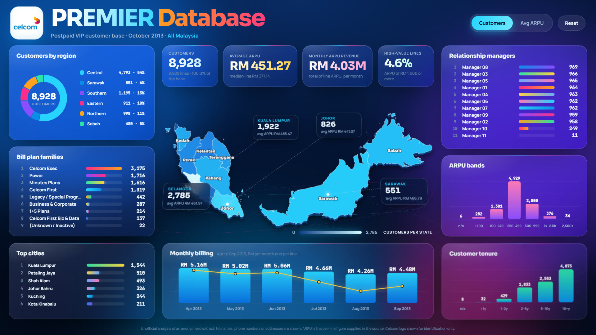
The full dashboard: customers per state, KPIs and ranked panels. Staff names are masked in this preview.
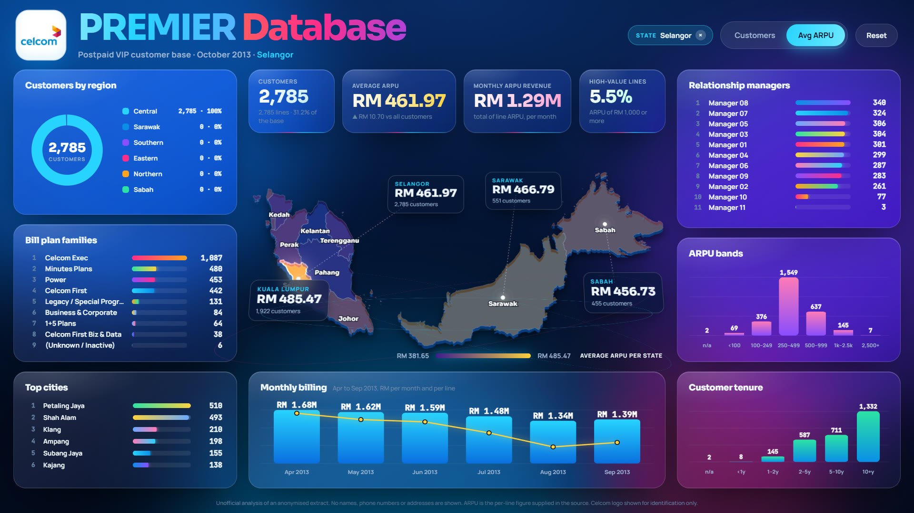
Filtered to one state and switched to average ARPU: every panel recalculates and the map changes colour scale.
The brief: a Power BI-style analysis of a customer base (map by state, region then city, bill plans, which managers hold the most customers, average ARPU) in the layout of a big-screen operations dashboard.
The data work: 28 spellings of state names cleaned to 16 states, 135 raw plan names grouped into 9 families, and the headline numbers checked against independent calculations on the source file.
The design: glassmorphism panels, a 3D-tilted map that follows the pointer, numbers that count up, bars and rankings that spring into place, and an idle spotlight that cycles through the biggest states. Reduced-motion settings switch the motion off.
How it is built: plain HTML, CSS and JavaScript with SVG, no chart library. The same analysis was also built as a Power BI project.
The interactive version is not published because it comes from customer data. This page shows screenshots only, with staff names masked. An unofficial analysis; the Celcom name and logo belong to Celcom.